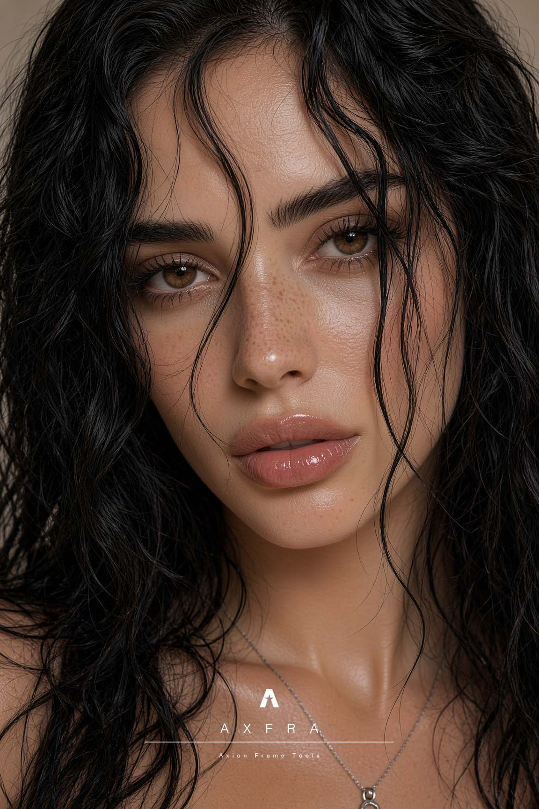
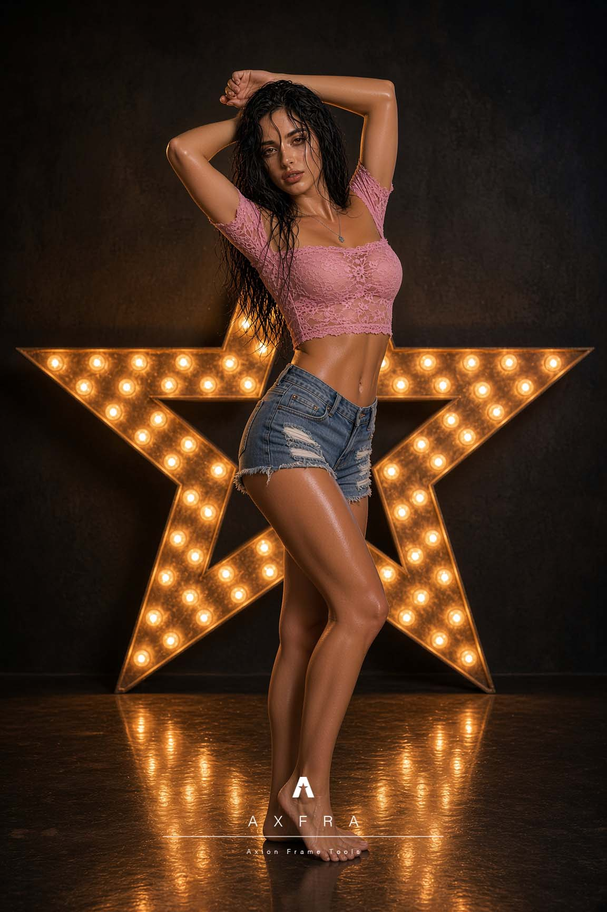

AXFRA / Demostración aplicada
KATEFAUna modelo virtual para una tienda de moda
ALARSI creó a KATEFA con AXFRA para un cliente. Durante 2027 modelará prendas para su tienda online y será el rostro de su publicidad.


El rostro de KATEFA
El primer plano deja ver las pecas sobre la nariz, la forma de los ojos y las cejas marcadas. Son rasgos que ayudan a reconocerla cuando el plano se abre o cambia la iluminación.
Un conjunto, dos puestas en escena
El top rosa de encaje y el short de denim se mantienen en ambas composiciones. La pose, el encuadre y la luz cambian qué parte del conjunto llama primero la atención.



Una identidad reutilizable
En AXFRA, la identidad, el vestuario, la pose, la cámara y la iluminación se pueden trabajar por separado. Eso permite preparar nuevas composiciones para la tienda y sus campañas tomando a KATEFA como referencia común. Su Identity Core es privado.